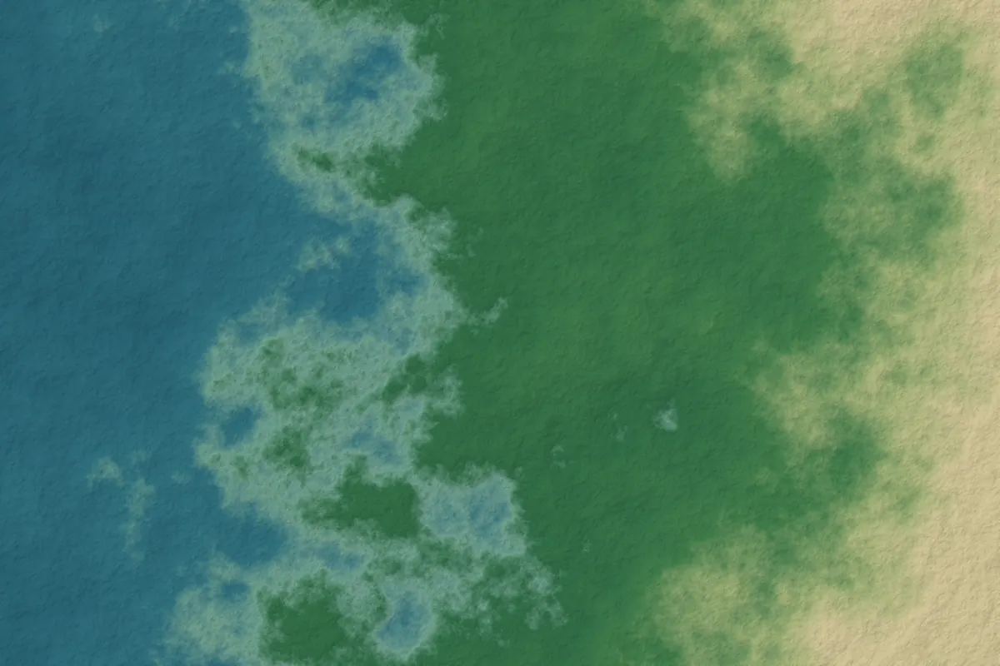

Sustainable port development and regional connectivity

Illustrative graphicPorts are among the most consequential infrastructure investments a country can make. They influence trade costs, industrial location, urban growth and coastal ecosystems for decades. For Bangladesh, where most seaborne trade has historically passed through Chattogram, the development of a deep-sea port at Matarbari on Maheshkhali Island, Cox's Bazar, has been a long-running national priority.
Why depth and scale matter
Ship size has grown steadily, and ports that cannot accommodate larger vessels depend on feeder services and transshipment through regional hubs, adding time and cost. Reporting on the Matarbari project describes a port designed for container vessels of up to around 8,000 TEU, compared with vessels of about 2,500 TEU at Chattogram. The project, financed with support from the Japan International Cooperation Agency, was approved by the Executive Committee of the National Economic Council in 2020. Timelines for large port projects frequently shift, so current status should always be checked with the Chittagong Port Authority.
A port is a system, not a terminal
The economic case for a port depends on what happens beyond the quay. Road and rail links, inland waterways, logistics parks, customs processing, power and water supply all determine whether a new terminal actually reduces costs for shippers. Poorly planned hinterland connections can simply move congestion inland. Regional connectivity, including links to neighbouring economies, can expand a port's catchment, but also requires coordinated policy across borders and agencies.
Environmental and social considerations
Coastal port development interacts with sensitive and dynamic environments. Key issues typically include:
- Dredging and sediment: capital and maintenance dredging alters sediment transport, turbidity and seabed habitats, and dredged material must be managed responsibly.
- Shoreline change: breakwaters and channels can shift erosion and accretion patterns along adjacent coasts.
- Coastal ecosystems: mangroves, mudflats, seagrass and fisheries nursery areas provide storm protection and livelihoods, and can be lost directly or degraded indirectly.
- Climate exposure: ports are exposed to cyclones, storm surge and sea-level rise, which affects design standards and the resilience of supply chains.
- Livelihoods and land: salt farming, shrimp aquaculture and fishing communities may be affected by land acquisition and changes in access to coastal resources.
- Induced development: industrial zones and settlements that follow a port often have larger cumulative impacts than the port itself.
Planning approaches that help
Strategic environmental assessment evaluates a whole development programme, including the industrial zones, energy facilities and transport links that accompany a port, rather than each project in isolation. This is the level at which cumulative impacts and alternatives can realistically be considered.
Working with Nature, an approach promoted by PIANC, the World Association for Waterborne Transport Infrastructure, encourages project teams to understand the natural system first and look for designs that achieve project objectives while creating environmental benefits, rather than mitigating damage after a design is fixed.
Long-term monitoring using satellite imagery can track shoreline position, land reclamation, mangrove extent and land-use change around port areas in a consistent, repeatable way, supporting both compliance monitoring and adaptive management.
Questions for decision-makers
- Have cumulative impacts of the port and associated developments been assessed together?
- Is there a credible hinterland connectivity plan, with responsibilities and financing?
- How are affected communities consulted, compensated and supported in restoring livelihoods?
- Are design standards based on future climate conditions rather than historical records alone?
- Is environmental monitoring independent, public and linked to clear management responses?
Ports that address these questions early are more likely to deliver lasting economic benefits without transferring hidden costs to coastal ecosystems and communities.
References and further reading
- The Daily Star. Coverage of the Matarbari Port Development Project, including vessel capacity and approval history. https://www.thedailystar.net/node/3874941
- The Daily Observer (2026). Tk 3,707cr allocated for Matarbari Deep Sea Port. https://observerbd.com/news/579625
- PIANC (2011). Working with Nature. PIANC Position Paper. World Association for Waterborne Transport Infrastructure.
- Therivel, R. (2010). Strategic Environmental Assessment in Action (2nd ed.). Earthscan.